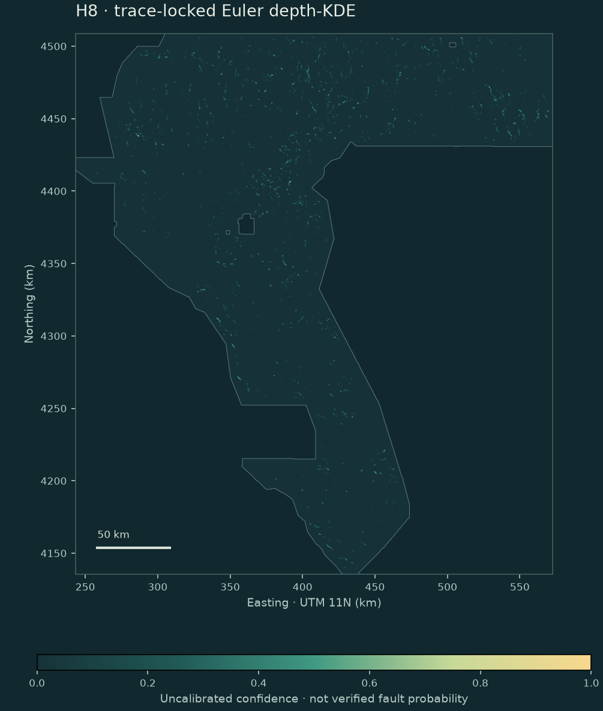

AUDIT / NO SELECTIVE REPORTING
Evidence you can inspect.
Hashes prove artifact identity. Frozen gates decide promotion. A proxy test measures a limited outcome. None of these alone establishes a new fault or a leaderboard win.
| Candidate | G1 | G2 | G3 (gate bar 0.091550) | G4 (vs H33-B2 0.003590) | Proxy DTI | CAT-HID mean |
|---|---|---|---|---|---|---|
| H13 · crest-binary | ✅ format | ✅ uniqueness | ❌ proxy holdout | ✅ CAT-HID | 0.019677 | 0.021464 |
| H8 · trace-locked KDE | ✅ format | ✅ uniqueness | ❌ proxy holdout | ✅ CAT-HID | 0.003371 | 0.023673 |
| H33-B2 · owner reference | Diagnostic comparator on the same instruments — not the owner-reported 0.2778 leaderboard score. | 0.091550 | 0.003590 | |||
| Frozen SGMC-derived incumbent | Circular on the SGMC proxy; upper bound of SGMC-matching, not a target. | 0.835907 | — | |||
G3 is the binding gate: pooled DTI on the frozen SGMC proxy (4×6 blocks, 3-cell guard, exact-label zeroing) must exceed 0.091550 — H33-B2 measured on the identical instrument — and the controls. H13 reaches 0.019677, H8 0.003371. Both fall below the mass-matched random controls (0.042564 / 0.017663), which says Euler crests are not preferentially located on off-catalogue SGMC traces — consistent with session 1’s AUC 0.534 finding. The SGMC-derived incumbent’s 0.835907 shows the proxy’s ceiling belongs to SGMC-matching fields; it is circular and is not a target.
Counter-signal, honestly: on the repaired, non-circular catalogue-component holdout, H8 (0.023673) and H13 (0.021464) beat H33-B2 (0.003590) ~6×. The Euler family has fault-finding skill; its placement does not match the SGMC proxy. Placement against the hidden test set cannot be measured locally.
Exact template contract.
One float32 band each. EPSG:32611, 100 m, 3,730 × 3,292. Exact affine transform and footprint. Finite [0,1] inside; NaN only outside.
H13 receipt ↗ · H8 receipt ↗Raw values, not previews.
343 byte-verified artifacts each; full-size array comparisons for both candidates. Max |Pearson| 0.0376 (H13) / 0.0784 (H8); zero near-duplicates under both the H4 and historic H2-B rules.
H13 comparisons ↗No weekly slot.
G3 failed for both; gates were frozen before scoring and not relaxed. The CAT-HID win (G4) is reported as a skill signal, not as an override.
H13 gate record ↗NOVELTY / FULL CORPUS, BOTH CANDIDATES
Not a re-packaged previous submission.
Reject identical file or canonical pixel hashes, |Pearson| ≥0.85, top-37,654 positive-cell Jaccard ≥0.50, or containment ≥0.80. All pixels compared — no random sampling.
| Closest prior outputs to H13 by |r| | Pearson r | Top-budget Jaccard |
|---|---|---|
| GEMSDOE40 gemsdoe40-h2b-tmi-euler-natural-support-20261005.tif | 0.037640 | 0.020941 |
| GEMSDOE40 gemsdoe40-h7-rtp-euler-gravity-context-3d-kde-20261006-998f660f.tif | 0.023663 | 0.020187 |
| GEMSDOE9 GEMSDOE9-basin-v1-UNAPPROVED-ae3ec2c5.tif | 0.021391 | 0.011129 |
| GEMSDOE40 gems40-euler-si0-depthcluster-crossfamily-continuous-20261005-f3e0ed7a.tif | -0.019664 | 0.000699 |
| GEMSDOE40 GEMSDOE40-submission.tif | 0.015254 | 0.009424 |
H13 maxima: |r| 0.037640, Jaccard 0.020941, containment 0.046196. H8 maxima: |r| 0.078369, Jaccard 0.038550, containment 0.105653. Corpus scope: 55 repositories, 338 pinned branch heads, 1,859 reachable commits, 190 ZIP paths inspected.



Instrument repair disclosed
The conventional catalogue-component holdout (CAT-HID) had two latent defects repaired this session: the hidden components were included in their own exclusion flank (truth collapsed to zero), and the 20 % hide fraction counted background pixels (selecting all components). Every historical CAT-HID number in this repository was a zero from these defects; none ever drove a decision. All session-2 comparisons re-measure every candidate and baseline under the repaired instrument.
What cannot be claimed
- No independently verified unknown-fault truth set or competition score for H8/H13.
- No proof that a modeled contact is a fault, geothermal vent, fluid conduit, or viable reservoir.
- No organizer authentication of the public mirrors; hashes prove consistency, not provenance.
- No claim that proxy performance transfers to the hidden test set — the session’s own controls show it need not.
H13 configuration/code hashes · H8 configuration/code hashes · Frozen registration + amendments · Human-readable result